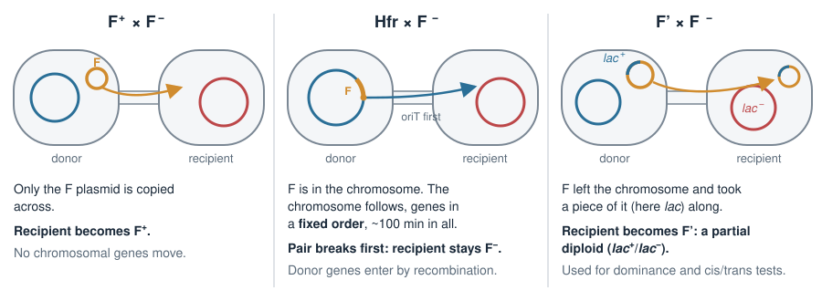
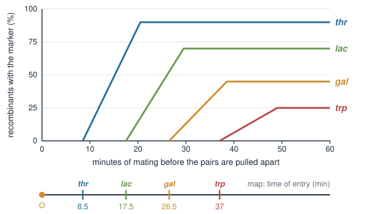
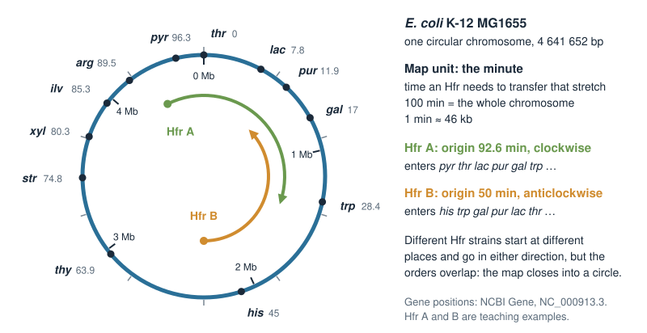
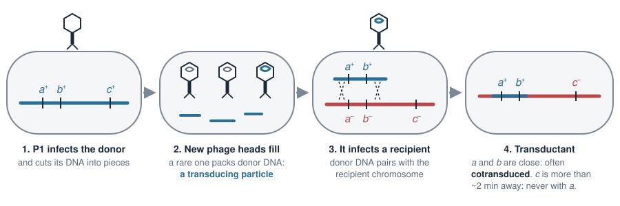

Part 5: Chromosomes in detail. Conjugation, transduction and transformation as mapping tools
Basic and molecular genetics (5MO104)
About this lecture
Recap of 5MO103 (Microbiology and basic molecular biology). There you met the three ways bacteria exchange DNA. Today we look at them through the lens of genetics: how they were used to map genes on the bacterial chromosome, and which mutations made that possible.
Bacterial mutants: auxotrophs, resistance markers, replica plating; selection vs screening.
Conjugation: F+, Hfr and F′ strains.
Interrupted mating: a map in minutes, and why it is circular.
Minutes vs base pairs: the E. coli map against the genome sequence.
Transduction and cotransduction: fine mapping.
Transformation, and what each method is still used for.
Book: Hartwell, Genetics: From Genes to Genomes, the bacterial genetics chapter.
Why bacteria are good for genetics
Property
Why it helps
Haploid: one copy of each gene
every mutation shows its phenotype at once; no dominance to worry about
Fast: a generation in ~20–30 min
many generations overnight
Huge numbers: ~109 cells per ml
events at 1 in 107 can be found, if you can select them
Grow on defined media
phenotypes are read as “grows / does not grow”
Notation. Genes are three lower-case italic letters plus a capital: lacZ, trpA. A phenotype or marker is written with a superscript: lac+ (can use lactose), lac− (cannot), strr (streptomycin resistant), strs (sensitive). A strain that needs a nutrient, such as Trp−, is an auxotroph; the wild type, which grows on minimal medium, is a prototroph.
Mutants: selection, screening and replica plating
Selection: only the wanted cells grow. Minimal medium without threonine selects Thr+ cells; streptomycin selects strr cells.
Screening: everyone grows, but you can see the wanted ones. On X-gal plates, lac+ colonies are blue and lac− colonies white.
Replica plating (Lederbergs, 1952): press a velvet onto a master plate of colonies, then onto several test plates. A colony that grows on complete medium but not on minimal medium is an auxotroph.
Replica plating also showed that resistance mutations (to phage T1, for example) exist before the selection: the same colony positions were resistant on every replica. Selection finds mutants; it does not cause them (Luria and Delbrück had shown the same with the fluctuation test, 1943).
Three ways DNA moves between bacteria
Transformation
Conjugation
Transduction
DNA travels as
naked DNA from the medium
DNA copied through a mating bridge
DNA packed in a phage head
Needs
a competent recipient
an F+, Hfr or F′ donor, and contact
a phage that sometimes packs host DNA (P1, P22)
How much DNA
small pieces, a few to ~20 kb
up to the whole chromosome (~100 min)
about one phage genome (P1: ~100 kb ≈ 2 min)
Mapping use
cotransformation of close genes
gene order and long distances (minutes)
fine mapping by cotransduction
In all three, a donor fragment only becomes part of the recipient’s chromosome by homologous recombination: an even number of crossovers (in practice two) between the fragment and the chromosome. No recA, no recombinants.
Conjugation: F+, Hfr and F′

The F factor (~100 kb) carries the genes for the mating bridge and an origin of transfer, oriT. One strand is cut at oriT and sent across, 5′ end first, while it is copied.
Interrupted mating: a map in minutes

Wollman and Jacob (1950s):
Mix Hfr strs donors with F−strr recipients that carry recessive markers.
At intervals, shake the pairs apart in a blender.
Plate on streptomycin (kills the donors) plus a medium that selects a donor marker.
Each marker first appears at its time of entry. Earlier entry = closer to the origin. Later markers reach a lower plateau, because pairs break apart at random.
Hfr maps are circular

Each Hfr strain has F inserted at its own place and in its own orientation. Every Hfr gives a linear order, but the orders from different Hfrs overlap and only fit together as a circle: the first genetic evidence that the E. coli chromosome is circular.
Minutes vs base pairs
The whole chromosome transfers in about 100 min, and the MG1655 genome is 4 641 652 bp (NC_000913.3), so:
The minute map was drawn by convention from thr = 0. Transfer speed is nearly constant along the chromosome, so minutes and base pairs are almost proportional: a straight line. You fit that line in R.
Generalized transduction

Phage P1 (E. coli) or P22 (Salmonella; Zinder and Lederberg, 1952) sometimes packs a piece of host DNA instead of its own genome. Any part of the chromosome can be packed, so any gene can be transduced (generalized transduction). Specialized transduction, by phage λ, moves only the genes next to its insertion site.
Cotransduction: distance from frequency
Select one donor marker, then score a second, unselected one by replica plating. The cotransduction frequency is the fraction of selected transductants that also got the second marker.
Selected
Scored
Cotransduction
Meaning
leu+
azir
high
leu and azi are close
leu+
thr+
lower
thr is further from leu
leu+
lac+
0
lac is more than ~2 min away
Higher frequency = closer. Unlike recombination frequency in Part 2, the scale is reversed.
Order of three genes: in a three-factor cross, the class that needs four crossovers is the rarest. The gene in the middle of that class’s arrangement is the middle gene.
Transformation
Natural competence: Streptococcus pneumoniae, Bacillus subtilis, Haemophilus influenzae take up DNA from the medium. Griffith’s mice (1928) and Avery, MacLeod and McCarty (1944) used it to show that DNA is the genetic material (DNA recap unit).
Artificial: E. coli is made competent with calcium chloride or an electric pulse. This is how plasmids get into cells in every molecular biology lab.
Mapping: genes close enough to be on one piece of DNA are cotransformed; distant genes are transformed together only as often as two independent events (frequency × frequency).
Transformation and transduction are gene transfer, not sex: only a fragment moves, and the recipient stays haploid apart from that fragment.
Which mutation breaks what
The classic markers are real genes. Their old names describe the phenotype; the new names describe the protein.
Marker (phenotype)
Gene
Protein
What the mutant does
lac−
lacZ
β-galactosidase
cannot use lactose; white on X-gal
trp−
trpA
tryptophan synthase α
needs tryptophan (auxotroph)
thr−
thrA
aspartate kinase / homoserine dehydrogenase
needs threonine
strr
rpsL
ribosomal protein S12
ribosome no longer binds streptomycin
tonr (T1 resistant)
fhuA
outer membrane receptor
phage T1 cannot attach
azir
secA
protein secretion ATPase
resists sodium azide
Rec−
recA
recombinase
no recombinants in any cross
Loss of function in a biosynthetic enzyme → auxotroph. A change in a drug or phage target → resistance.
Summary
Concept
Key fact
Bacteria are haploid
every mutation shows; crosses end on selective plates
Auxotroph / prototroph
needs a nutrient / grows on minimal medium; found by replica plating
F+ × F−
only F transfers; recipient becomes F+
Hfr × F−
chromosome transfers from oriT in a fixed order; recipient stays F−
F′
F with a piece of chromosome; gives a partial diploid for dominance tests
Interrupted mating
time of entry gives order and distance in minutes
Circular map
overlapping Hfr orders; 100 min ≈ 4.64 Mb, 1 min ≈ 46 kb
need homologous recombination (recA): two crossovers
Where this leads
Next: Organelle inheritance. Mitochondria and chloroplasts descend from bacteria (an alphaproteobacterium and a cyanobacterium) and still carry small circular genomes.
Part 6: Prokaryotic regulation (recap). F′ partial diploids were the key tool of Jacob and Monod’s lac operon experiments.
Back to Part 2. Interrupted mating and cotransduction are the bacterial versions of the linkage and three-point cross mapping.
In the exercise: map genes from Hfr and transduction data by hand, find E. coli genes in NCBI Gene, and in R compare entry times with genome positions using left_join and lm.